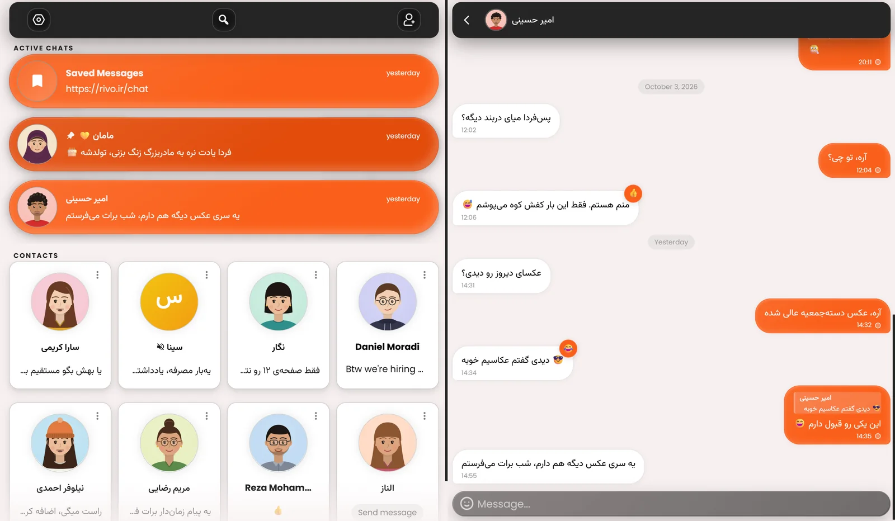
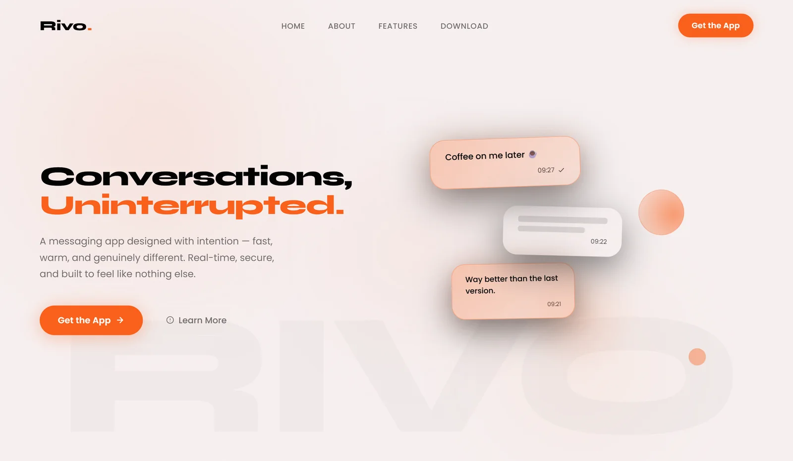

Readable once
The recipient can open a one-time message a single time. After that its content is gone, and only a trace remains that it was sent.
Case study
Rivo is a real-time chat app. The server (Express and Socket.IO on Node.js) and the app (React) are both written in TypeScript and read one shared contract, so a conversation updates the instant a message is sent, and everything is kept in PostgreSQL through Prisma.
It was built to fix five things ordinary messengers get wrong.
Most messengers show every conversation the same way: one long list, ordered by the last message. The friend you talk to every day sits in the same list as someone you have not heard from in a year, and you do the sorting in your head.
Rivo does it for you, with one rule: a conversation stays in Active chats as long as its last message has not been seen. A message waiting for you keeps it there, and so does one of yours they have not opened yet. Once the last message is seen and nobody replies, the conversation is over, and it moves to Contacts on its own. A new message brings it straight back.
A normal message is permanent and arrives the moment it is sent. Sometimes both are wrong: a password should not stay in a chat history forever, and a birthday note should not arrive a week early. And in most apps, an archived chat is still on your main screen, just inside a folder.
The recipient can open a one-time message a single time. After that its content is gone, and only a trace remains that it was sent.
A time capsule is written now and delivered locked. It opens by itself at the moment the sender chose.
Archiving in Rivo takes a chat off the main screen entirely. It is only reachable from Settings, so it stays out of sight until you go looking for it.
If a chat app's database is copied, the conversations in it usually go with it. Rivo uses envelope encryption: every message is locked with its own random key, and that key is locked again with the server's key. The database holds no plain text at all, not even inside a reply's quote or a forward.
The server's keys can be kept in HashiCorp Vault instead of on its disk. Moving to a new key re-wraps each message's own key without decrypting a single message, saves every row before changing it, and leaves a message alone if it is edited mid-way.
The server receives the plain text over the socket. It exists unencrypted only in memory, for as long as this request lasts.
A fresh 256-bit key, made for this message alone, encrypts it with AES-256-GCM, which also seals it against tampering.
That key is encrypted in turn with the server's key, which is named (v1, v2)
and loaded from Vault or the environment when the server starts.
PostgreSQL stores the ciphertext, the wrapped key and the name of the key that wrapped it. Reading a message runs the same steps in reverse.
6f1c09e4a7b3…d25eZk9QbTRnc1ZyN…hQ2x3v1A copy of this table on its own reveals nothing. Reading it needs the server's key.
A phone on a train loses its connection without saying so, and only notices when it wakes.
So Rivo does not start from the moment it noticed: when it reconnects, it asks the server for
everything that changed since it last heard from it, minus 30 seconds. An edit, a deletion or a
message from the gap still arrives. Every message carries updatedAt, so a late
event never overwrites newer data, and a deleted message cannot come back.
What you write goes into a queue first and shows at once. The queue is saved in the browser, so
even a refresh does not lose it, and it is sent in order when the connection returns. Each
message carries a random clientId, unique per sender in the database: if an answer
is lost and the app sends again, the server returns the message it already has instead of
storing a second one.
Nothing lost, nothing sent twice.
shared/. Every input is checked against its schema before anything else, and renaming a field breaks the type check on both sides at once.
